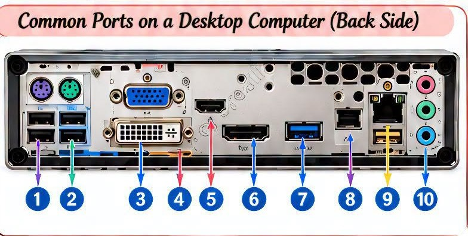
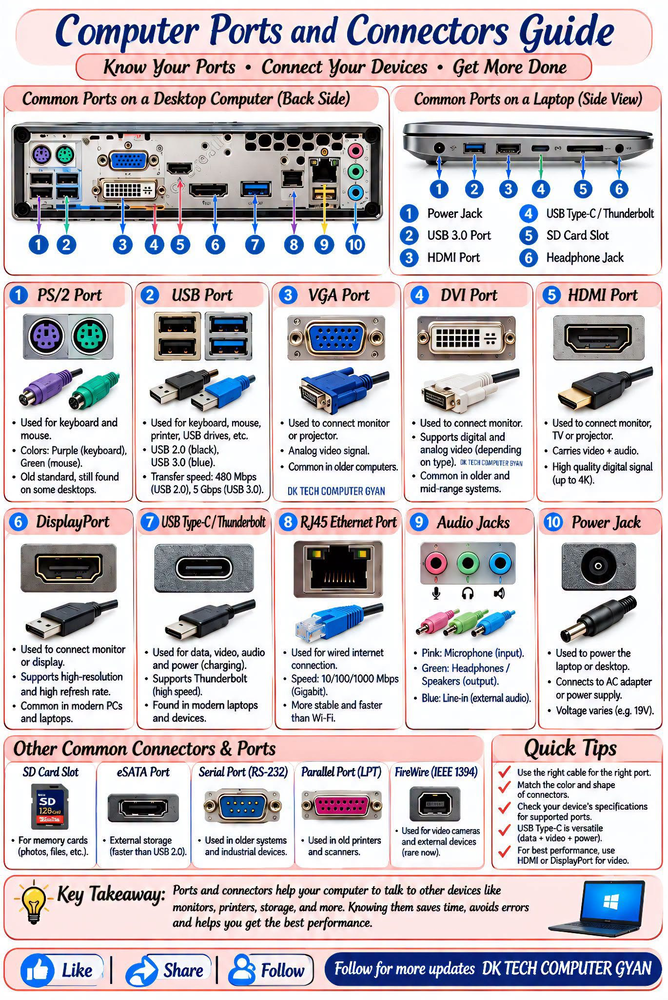
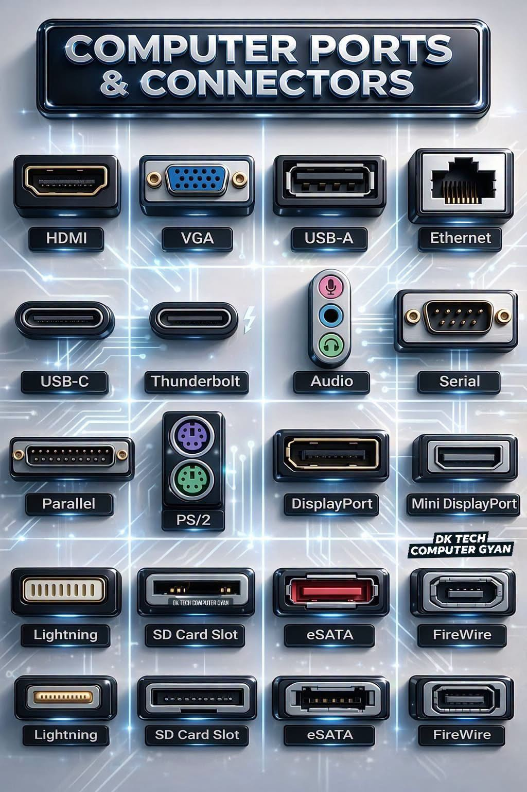
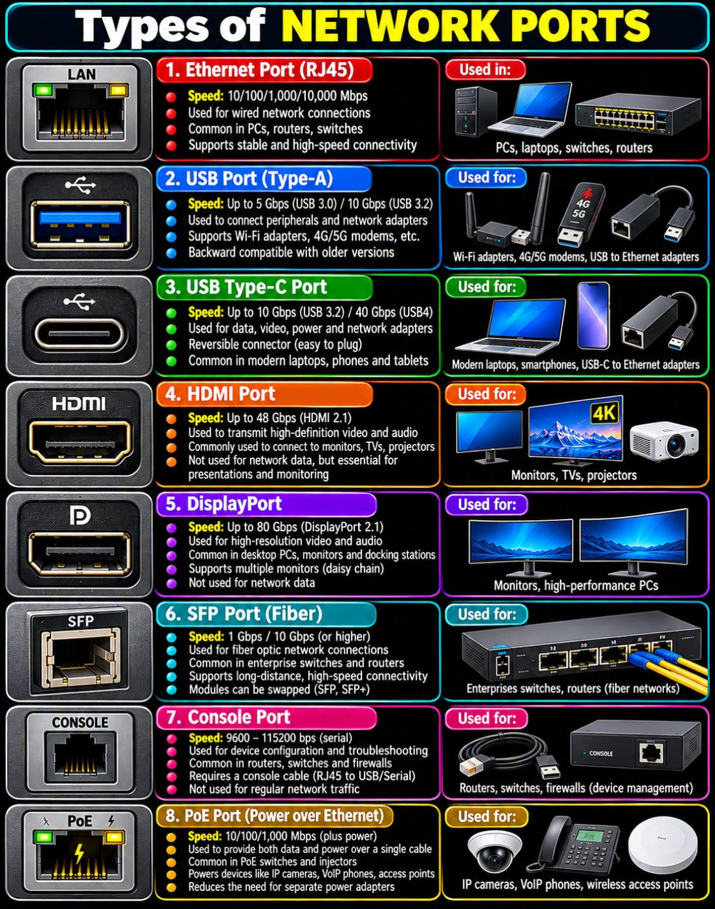
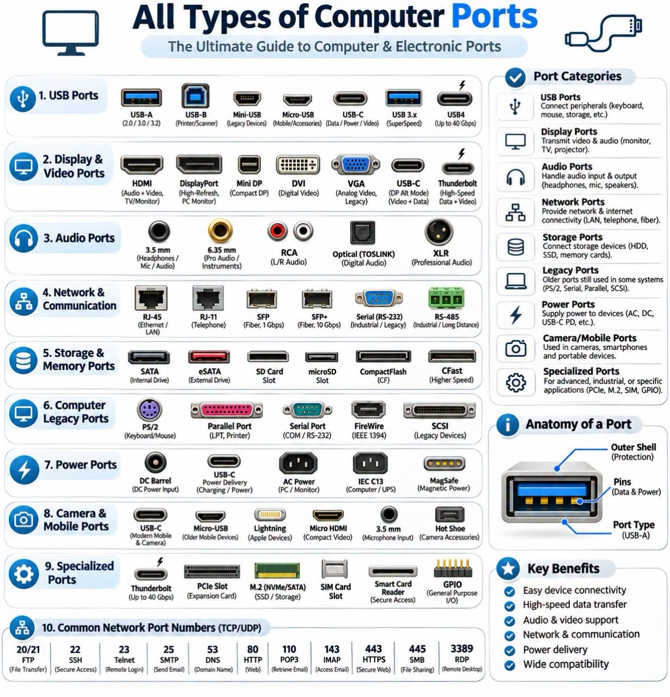
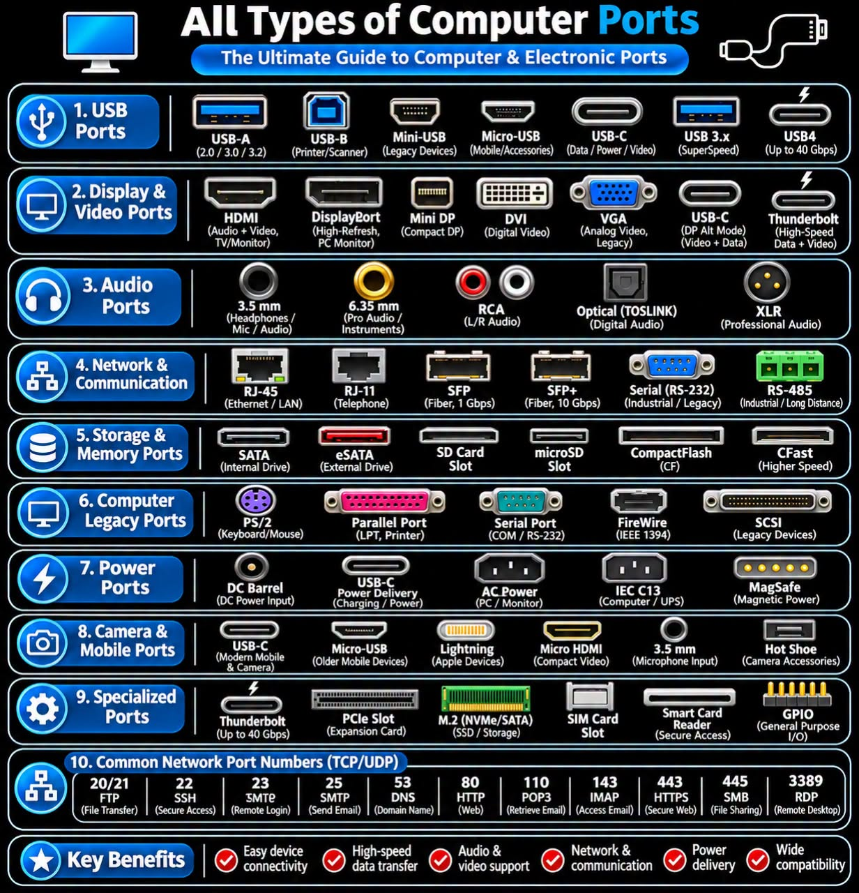

电脑接口图鉴
18 PORTS
HDMI
🔍 3D 插口特写 (点击放大)
🔌 插座 + 线材插头对照
💡 提示：点击任意图片可全屏高清检视细节
48 Gbps
📍 在真实电脑上的位置（点击下方编号快速切换接口）：

阅读【HDMI】秒懂百科
中学生生活比喻与 4 项核心参数 ➔

① 台式机与笔记本接口指南

② 16种接口 3D 微距特写

③ 8大网络与通信接口详解

④ 接口全分类与端口解剖 (浅色)

⑤ 接口全分类与网络端口 (深色)
🎯 场景实战问答 (1 / 6)
得分：0
题目加载中...
请选择最匹配的电脑接口！
接口参数流
影音显示
USB与存储
网络通信
音频与电源
经典老接口